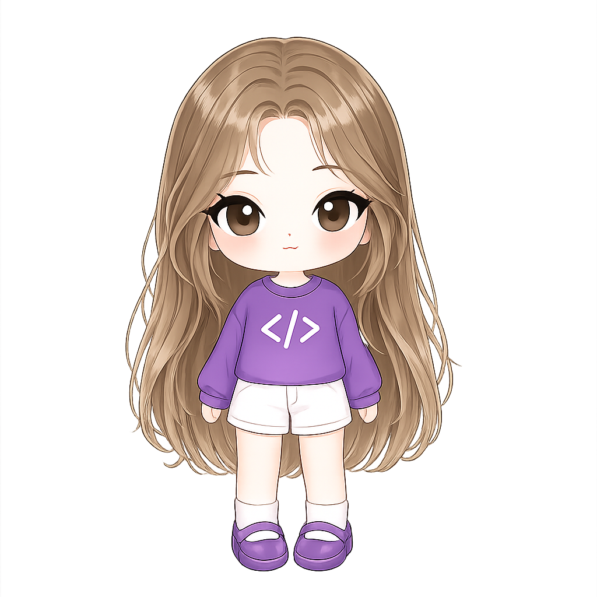

/* stack que uso */linguagens, frameworks e ferramentas
As tecnologias por trás dos meus projetos.
Front-end e back-end — o que uso no dia a dia pra construir, testar e evoluir como desenvolvedora full stack.
Interfaces, APIs e projetos práticos — construídos entre a faculdade, cursos e a vontade de aprender fazendo.

Sou Luana, tenho 19 anos e estou em formação em Análise e Desenvolvimento de Sistemas pela UNICEP, apaixonada por construir coisas reais, não só tutoriais.
Desenvolvo projetos com HTML, CSS, JavaScript, TypeScript, Angular, Node.js, PHP, Python e C#, sempre buscando aplicar boas práticas e escrever código limpo.
Também tenho interesse em, no futuro, mergulhar fundo em cibersegurança, porque entender como as coisas quebram é a melhor forma de aprender a construí-las melhor.
Com curiosidade como motor, código como ferramenta e café como combustível.
Cada projeto abaixo é uma tentativa de praticar o que estudo — de lógica de programação a componentização e boas práticas.
Aplicação para gerar, listar, visualizar e baixar certificados, construída com Angular e boas práticas de componentização.
Ver no GitHub ↗Conversor de números binários para decimal, desenvolvido para praticar lógica de programação e manipulação do DOM.
Ver no GitHub ↗Landing page responsiva para apresentar um destino turístico, aplicando HTML semântico e CSS moderno.
Ver no GitHub ↗Jogo de Sudoku com geração procedural de tabuleiros e interface interativa.
Ver no GitHub ↗Plataforma de monitoramento com dashboard analítico para visualização de dados em tempo real, apoiando a tomada de decisão.
Ver no GitHub ↗Ecossistema de gestão logística com três aplicações (portal do cliente, painel administrativo e portal do motorista) consumindo uma única API e um único banco de dados.
Ver no GitHub ↗Construo conhecimento através de cursos e prática constante: lógica de programação, desenvolvimento web, APIs REST e boas práticas de código.
C# e .NET, Angular e React Native com Expo (Rocketseat), Bootcamp de ADS (UNICEP, em andamento) — a base prática por trás dos meus projetos.
Front-end e back-end — o que uso no dia a dia pra construir, testar e evoluir como desenvolvedora full stack.
Aprofundamento em front-end e back-end: JavaScript, TypeScript, Angular, Node.js, PHP, Python e React Native, construindo aplicações cada vez mais completas.
Início da graduação em ADS na UNICEP, aprofundando conhecimentos em algoritmos, banco de dados e engenharia de software.
Primeiros passos na programação: fundamentos, desenvolvimento web e os primeiros projetos práticos.
Quer o currículo completo? baixar em PDF ↗
Tem um projeto em mente ou uma vaga de estágio? Me manda uma mensagem, respondo o mais breve possível.
✉ byluanagimenes@gmail.com ◐ github.com/luanagimns ◑ linkedin.com/in/luanagimns ✉ ENVIAR E-MAIL